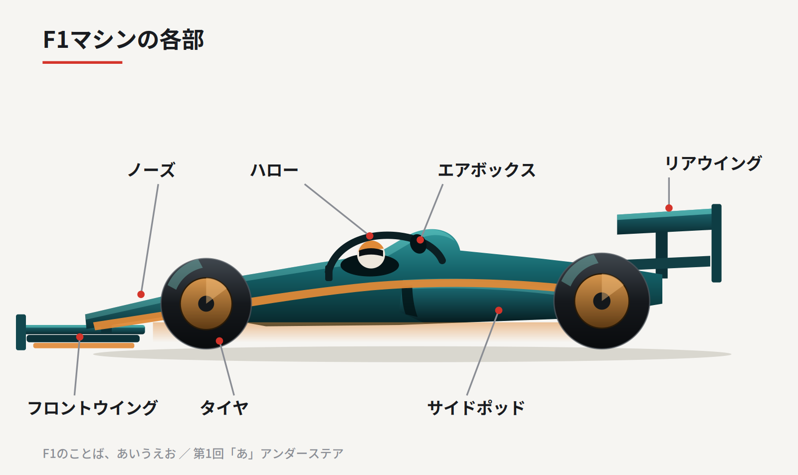

F1中継を見ていると、聞き慣れない言葉が次々と出てきます。毎週ひとつずつ、五十音順に紹介していきます。第1回は「あ」から、アンダーステアです。
曲がりたいのに、曲がってくれない
カーブの手前でブレーキを踏み、ハンドルを切る。それでもマシンが思ったほど内側を向かず、そのまま外へ流れていく。
これがアンダーステアです。日本語なら「曲がらない」の一言で足ります。
反対に、後ろのタイヤが滑って車が内側を向きすぎるのがオーバーステア。こちらは「曲がりすぎ」で、スピンの一歩手前の状態です。
ドライバーはこの2つを無線でひんぱんに報告し、チームはそれを聞いてマシンを調整します。

なぜ起きるのか
原因はシンプルで、前のタイヤのグリップが足りていないから。
タイヤが路面をつかむ力には限界があります。その限界を超えて曲がろうとすると、タイヤは向きを変えるのをやめて、ただ滑り始めます。
限界が下がる理由はいくつもあります。
- カーブへの進入速度が速すぎた
- 前のタイヤだけ先に消耗した
- タイヤが冷えていて本来の性能が出ていない
- 前の車に近づいたせいで空気が乱れ、ダウンフォースが減った
最後のひとつがやっかいで、追い抜こうとして近づいた側が曲がれなくなる、というF1特有のジレンマを生みます。
「追いつけるのに、追い抜けない」の正体は、たいていこれです。
どう直すのか
走行中にドライバーができるのは、ブレーキの前後配分をハンドルのダイヤルで変えること。それと、ブレーキを少し残したままカーブに入り、前輪に荷重を乗せること。この工夫そのものが腕の見せどころです。
ピットに戻れば、チームはフロントウイングの角度を立てて前の押しつけを強めたり、タイヤの空気圧を調整したりします。
ただし前を強めすぎると、今度はオーバーステア寄りになる。どちらにも振り切らない一点を探す作業になります。この折り合いを、F1では「バランス」と呼びます。


中継での見つけ方
オンボードカメラ（ドライバー視点の映像）で、ハンドルを切っているのに景色が正面から動かない瞬間。あれがアンダーステアです。
コース脇の白線をはみ出してしまう「コースオフ」も、多くはこれが原因。
一度見つけられるようになると、順位表の数字だけでは見えなかった駆け引きが浮かび上がってきます。次のレースで、ぜひ探してみてください。